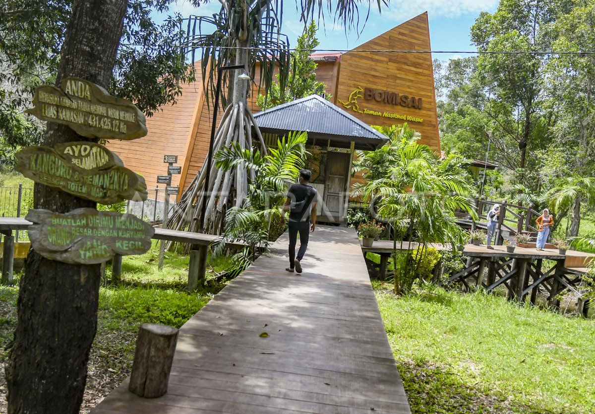
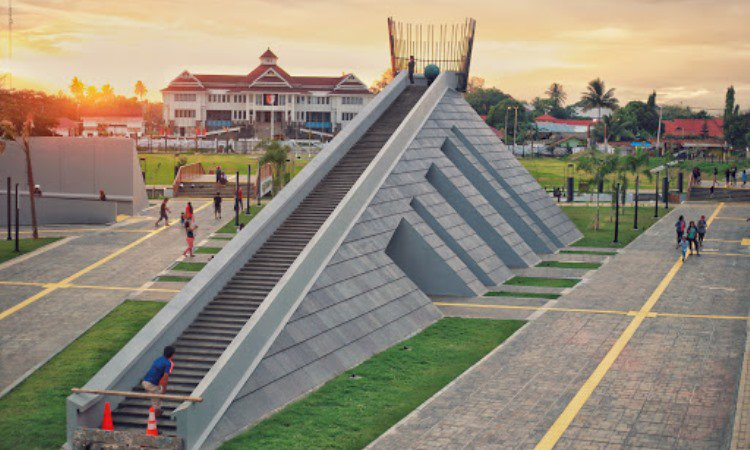

Wisata Populer Merauke
Destinasi wisata terbaik yang wajib dikunjungi.

Pantai Lampu Satu
Pantai eksotis dengan mercusuar ikonik dan pasir putih.

Taman Nasional Wasur
Surga satwa langka dan ekosistem savana yang memukau.

Monumen Kapsul Waktu
Berisi impian anak-anak Indonesia dan akan dibuka kembali tahun 2085.